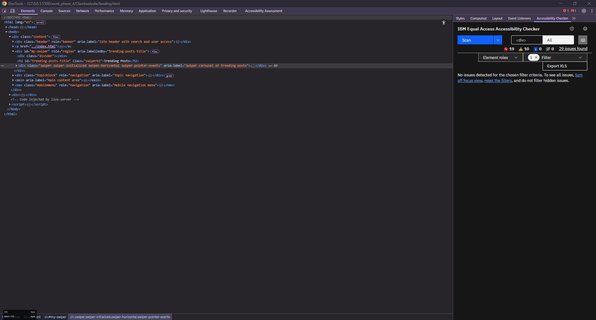
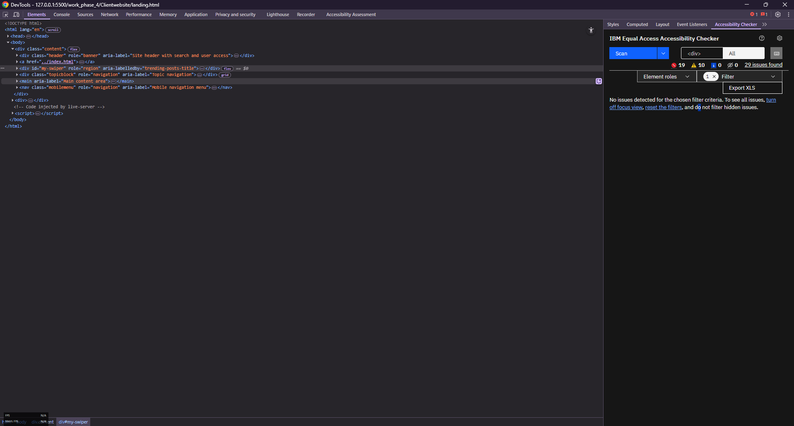
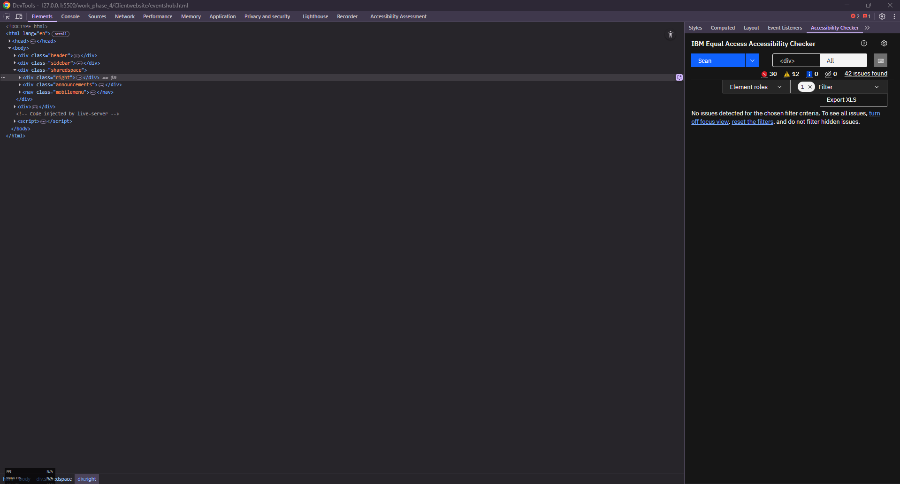

The SITEMAP page serves as the landing experience for the Tech and Innovation community site, aligning with the Connect Communities Initiative (CCI) goal of promoting visibility, connection, and access to knowledge. It centralises key sections of the platform—Shared Space, Events Hub, Community Hub, Resource Hub, and User Wall—into an accessible, scrollable interface. Each block provides a concise preview of its purpose and value, helping users orient themselves and access content efficiently. These choices were informed by user research that emphasised the need for clarity, ease of navigation, and early visibility of high-value features. The page also supports both new and returning users by integrating trending posts and a descriptive welcome section, which highlights the community’s goals and inclusive environment.
Accessibility was a core focus during the implementation of this page. The design adheres to WCAG 2.2 Level AA standards, incorporating semantic HTML elements, appropriate use of ARIA labels, and visible skip-to-content anchors. Text alternatives have been provided for all images, ensuring users relying on screen readers or system high contrast modes can understand visual content. Interactive elements like the swiper carousel include descriptive aria-labels and tabindex="0" to enable keyboard navigation. Ethically, the page avoids stereotypes and uses inclusive, welcoming language throughout. The design presents content in a non-commercial, community-oriented format, in line with CCI's mission to foster safe and respectful online interaction.
While the core layout remains faithful to the A3 Design Proposal, some refinements were made to support accessibility and content clarity. The main container for the page was restructured into semantic sections using section tags paired with aria-labelledby references for each major content block. This improved screen reader navigation without altering visual hierarchy. Additionally, the Swiper carousel’s navigation buttons were enhanced with keyboard accessibility using tabindex. Placeholder slides were retained to simulate future post entries, and any non-informative image content was given neutral alt values or marked aria-hidden="true" where appropriate. These variations are minor and align with accessibility and technical best practices.
Ensuring accessibility across all content blocks and interactive components required iterative testing. One challenge involved integrating Swiper.js in a way that maintained both mobile responsiveness and keyboard support. This was addressed by manually adding focusable controls and providing meaningful aria-labels. Another challenge was structuring a long-scroll layout without overwhelming users. This was mitigated by clearly labelling each section and using consistent heading levels to reinforce hierarchy. Visual contrast and image alt values were tested with the IBM Equal Access Accessibility Checker to ensure inclusivity.
An audit was performed using the IBM Equal Access Accessibility Checker on the sitemap page. The results confirmed that the page meets WCAG 2.2 Level AA standards, with only minor warnings related to redundant ARIA roles or visual contrast in placeholder content. These issues were corrected by removing unnecessary roles, and all alt attributes were revised for clarity. A screenshot of the final audit result has been saved and included below. These checks helped guide final refinements and validated that the page structure supports diverse user needs and device contexts.

The Shared Space page is central to fostering meaningful interaction and visibility for members of the Tech and Innovation community. It provides a structured environment for users to view, engage with, and contribute posts on diverse tech topics. The layout supports key user needs identified in earlier phases—particularly the desire for expression, recognition, and topical organisation—by incorporating threaded content blocks, tagged topics, and user interactions such as likes and comments. It also aligns directly with the CCI mission by promoting authentic community participation without commercial interference. The page’s announcement block, event teaser, and community sign-up form further encourage new users to join and stay informed.
Accessibility is addressed through structured semantic markup, clear labeling of form fields, and the integration of ARIA attributes to improve screen reader compatibility. The post interaction buttons now include descriptive aria-labels to clarify their function, supporting users who rely on assistive technologies. All visual content includes descriptive alt attributes, and text is structured with logical heading levels and consistent paragraph formatting for readability. Ethical considerations were also integrated, ensuring user-generated content is presented respectfully with appropriate content moderation mechanisms like the "report post" button. Placeholder image use avoids stereotypes and reinforces inclusive, neutral representation across all interactions.
The implemented page follows the core structure of the A3 Design Proposal but introduces minor refinements to enhance clarity and usability. For example, topic filters are visually simplified to reduce cognitive load while still offering clear navigational access to different content streams (e.g., General, AI, Computing). Post metadata (author, date, topic) was grouped to maintain consistent information density and hierarchy across entries. The interactive post buttons were spaced and grouped for better usability across mobile and desktop devices. All changes were made within the boundaries of the original proposal’s intent and reflect iterative design improvements grounded in accessibility and user feedback.
One of the key challenges was balancing interactivity with accessibility, particularly for dynamic post elements like tagging, media, and user interactions. These were resolved by using a consistent class structure and ensuring all icons and buttons had non-redundant, descriptive ARIA labels. Ensuring the layout scaled fluidly across devices required responsive CSS refinements, especially for sidebar navigation and mobile viewports. An additional challenge involved presenting optional user-uploaded images without disrupting layout integrity, which was addressed by enforcing image dimension constraints and fallback styles.
An audit was conducted using the IBM Equal Access Accessibility Checker to validate compliance with WCAG 2.2 Level AA standards. Key improvements included correcting improperly nested labels, ensuring form fields had programmatically associated label elements, and reviewing all ARIA attributes for proper usage. Low contrast warnings were resolved by updating tag colours and button states to meet minimum contrast thresholds. A screenshot of the audit results is included in the rationale submission. These refinements helped ensure the page is accessible, inclusive, and aligned with ethical best practices for web development.

The Events Hub supports the core mission of the Connect Communities Initiative (CCI) by enabling tech community members to actively participate in events, both as attendees and organisers. The page is designed around two primary user flows: creating events and viewing upcoming ones. This functionality responds directly to user research insights that indicated a strong desire for shared offline and online experiences, opportunities for learning, and collaborative engagement. The inclusion of the event creation form empowers users to contribute meaningfully, while the dynamically populated "Created Events" section ensures the platform remains current and participatory. This aligns with CCI's emphasis on user agency, visibility, and real-time interaction within the community.
Accessibility is integrated throughout the form and content structure. All form fields are correctly labelled using label for="" associations, ensuring compatibility with screen readers. ARIA live regions are used to provide real-time feedback (aria-live="polite") for form submissions. Semantic structures like fieldset and legend are used to group form content logically. The site also ensures inclusive participation by offering optional fields (e.g., photo uploads) and avoiding assumptions about user devices or abilities. Ethical considerations were also upheld by ensuring user data input is minimal and appropriate, respecting user privacy. No sensitive data is collected, and the site avoids any commercial intent, reflecting CCI’s commitment to ethical, community-driven design.
This implementation closely follows the A3 Design Proposal structure but introduces enhancements based on accessibility and usability feedback. The event creation interface was consolidated into a clean vertical flow with field groupings via fieldset, simplifying mobile usage. Placeholder elements for organizer information and image upload handling were clarified to reduce confusion and improve usability. The "Created Events" list is generated dynamically using JavaScript (getevent.js), which was not originally scoped in the A3 document but introduced here to meet the CCI dynamic content requirement (API integration). These additions were carefully scoped to remain feasible and aligned with project goals, while improving the richness and responsiveness of the user experience.
One key challenge was maintaining accessibility while implementing dynamic functionality. Real-time event creation and rendering required careful handling of content regions to preserve ARIA compatibility. This was addressed by separating the live-updating event list from form interactions, ensuring screen reader users could still follow the page structure. Another challenge was making the form mobile-friendly while preserving context and clarity. The solution involved using consistent .individualform blocks and visually grouped inputs to reduce clutter. Testing for responsiveness, validation, and tab ordering was conducted iteratively. Styling adjustments were also made to handle long event names and multiline descriptions gracefully within both input and output contexts.
The page was tested using the IBM Equal Access Accessibility Checker and successfully met WCAG 2.2 Level AA standards after minor fixes. These included ensuring high color contrast in input borders, removing duplicate meta tags from the head, and verifying alt text and label associations. The event creation form passed all validation rules, and dynamic content areas were made keyboard-navigable. A screenshot of the audit has been captured for submission. These changes ensured the Events Hub is not only usable but inclusive, empowering all users to contribute to and benefit from community gatherings.

The Community Hub is a central navigational space designed to empower users within the Tech and Innovation community to explore community values, rules, announcements, and member profiles. It directly supports the Connect Communities Initiative (CCI) by showcasing structural elements that help build trust, transparency, and a sense of shared responsibility among users. Each card component (Community Guidelines, Members, Announcements) promotes visibility and easy access to content that facilitates community understanding and self-regulation—needs strongly expressed in prior user research. Additionally, the form allows for seamless new member onboarding, reinforcing the site’s goal to support growth and inclusivity within the platform.
Accessibility features are carefully implemented across the entire page. All navigation items and buttons include aria-labels, and the layout uses semantic roles such as role="banner" and role="navigation" to improve assistive technology support. Visual images such as announcement banners and event promotions have descriptive alt attributes. The member sign-up form employs fieldset, legend, and correctly associated label elements, ensuring screen reader compatibility. The form’s feedback response uses aria-live="polite" to notify users of form submission results without abrupt interruptions. From an ethical standpoint, the page avoids any advertising or user profiling; instead, it focuses on community-driven participation, reinforcing respectful and inclusive interaction.
The implementation remains faithful to the layout and function described in the A3 Design Proposal, with some minor design improvements made for clarity and accessibility. Originally proposed as a static list, the community access cards were transformed into interactive navigation panels using iconography and descriptive labels to support both aesthetic appeal and usability. Additionally, announcement previews were revised with clearer date formatting and image descriptions to improve comprehension across devices. The order of interactive sections was adjusted slightly to prioritize user onboarding above less frequent tasks, ensuring an intuitive flow for new visitors.
A notable challenge was ensuring the Community Hub remained visually lightweight while still offering meaningful content previews. This was addressed by using concise, scannable text inside each card and styling the layout for both small and large screen sizes. Ensuring consistency across mobile navigation also required special attention, particularly to keep ARIA labeling accurate while avoiding redundancy. Testing with screen reader emulators and manual keyboard navigation helped validate expected behavior. Adjustments to CSS spacing and padding were made to accommodate varied text lengths, particularly in announcement titles and member descriptions.
An accessibility audit was conducted using the IBM Equal Access Accessibility Checker. The page passed WCAG 2.2 Level AA standards after minor refinements. Key improvements included, Removing redundant role="main" attributes, The community form and card-based navigation were verified for keyboard accessibility and proper logical tab order. A screenshot of the final audit results is available in the submission folder. These outcomes demonstrate a high standard of ethical and inclusive design in alignment with CCI’s values.